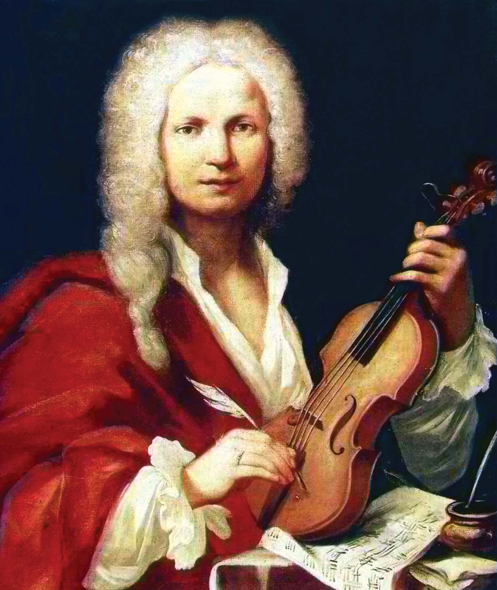

Antonio Vivaldy
About Vivaldy
 Antonio Lucio Vivaldi was an Italian Baroque musical composer, virtuoso violinist, teacher, and priest. Born in Venice, the capital of the Venetian Republic, he is regarded as one of the greatest Baroque composers, and his influence during his lifetime was widespread across Europe.
Born: March 4, 1678, Venice, Italy
Died: July 28, 1741, Vienna, Austria
Profession: Composer, Violinist, Priest, Musician
Wikipedia about Vivaldy